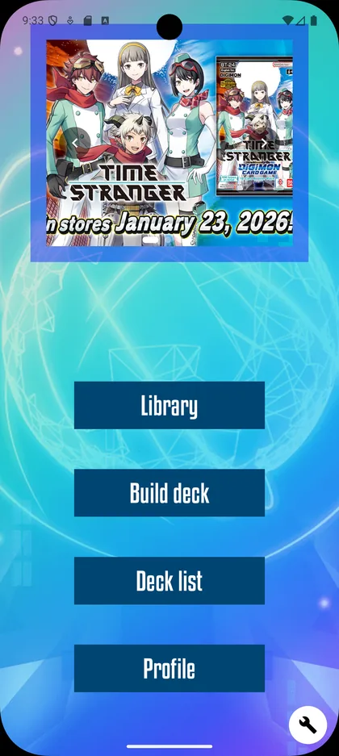
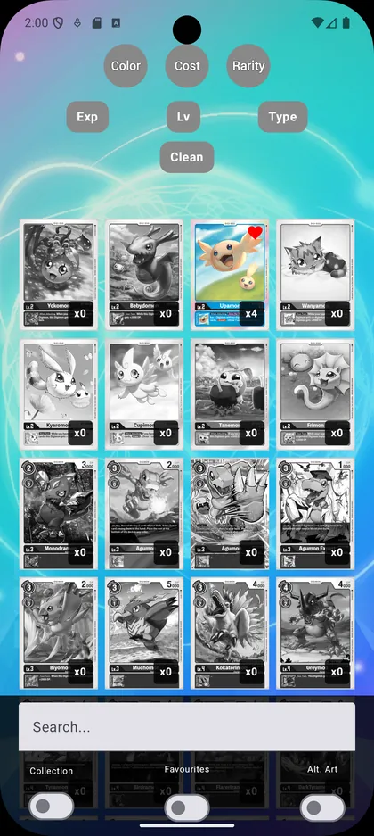
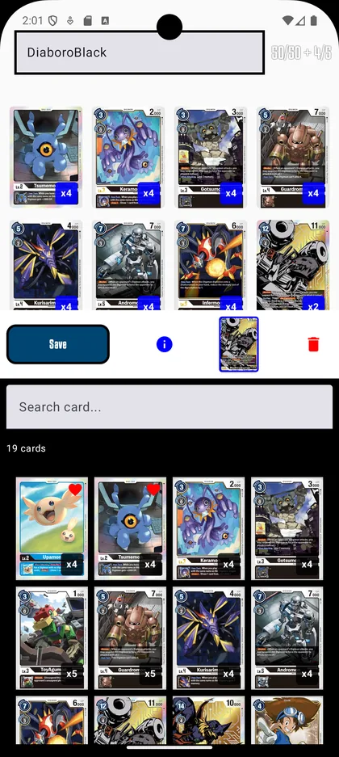

// proyectos
01 · FULLSTACK · DEMO EN VIVO
Gestión de Tributos Municipales
API REST en Java/Spring Boot que gestiona contribuyentes, recibos, pagos y el cálculo automático de recargos por impago según la Ley General Tributaria (5% / 10% / 20% + intereses de demora), con un frontend en React que consume la API en tiempo real y simula el importe a pagar antes de confirmar. Backend en Render, base de datos en Neon, frontend en Vercel.
Java 21
Spring Boot
PostgreSQL
React
Docker
JUnit 5 / Mockito
El backend está en un plan gratuito y puede tardar unos segundos en despertar en la primera visita.
02 · ANDROID · FIREBASE
DigitalHub
Aplicación Android para jugadores del TCG de Digimon: biblioteca interactiva de cartas con filtros, creación y gestión de mazos, tier list de arquetipos y perfil de usuario, con autenticación y persistencia real en Firebase. Construida en Kotlin con Jetpack Compose, siguiendo Clean Architecture (data / domain / presentation) y MVVM con casos de uso.
Kotlin
Jetpack Compose
Firebase Auth
Firestore
Clean Architecture
MVVM



App Android nativa (APK de depuración): necesitarás activar «orígenes desconocidos» en tu dispositivo para instalarla, al no venir de Google Play.
03 · BACKEND · MENSAJERÍA
Incidencias API
API REST en Spring Boot para la gestión de incidencias municipales, con caché distribuida en Redis (invalidación automática con @CacheEvict en cada escritura) y eventos en tiempo real con Apache Kafka cada vez que una incidencia cambia de estado. La máquina de estados vive encapsulada en la propia entidad de dominio, cubierta por tests. Todo el stack (Postgres, Redis, Kafka y la API) se levanta con un único comando de Docker Compose.
Java 21
Spring Boot
Apache Kafka
Redis
PostgreSQL
Docker Compose
Demo online con PostgreSQL (Neon) y caché Redis (Upstash). Kafka está desactivado en la versión online y funciona completo en local con docker compose up --build. Puede tardar un par de minutos en despertar en la primera visita.